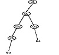

| Previous | Table of Contents | Next |
Certificates
The most important part of X.509 is its structure for public-key certificates. Each user has a distinct name. A trusted Certification Authority (CA) assigns a unique name to each user and issues a signed certificate containing the name and the user’s public key. Figure 24.2 shows an X.509 certificate [304].
The version field identifies the certificate format. The serial number is unique within the CA. The next field identifies the algorithm used to sign the certificate, together with any necessary parameters. Issuer is the name of the CA. The period of validity is a pair of dates; the certificate is valid during the time period between the two. Subject is the name of the user. The subject’s public key information includes the algorithm name, any necessary parameters, and the public key. The last field is the CA’s signature.
If Alice wants to communicate with Bob, she first gets his certificate from a database. Then she verifies its authenticity. If both share the same CA, this is easy. Alice simply verifies the CA’s signature on Bob’s certificate.
If they use different CAs, it’s more complicated. Think of a tree structure, with different CAs certifying other CAs and users. On the top is one master CA. Each CA has a certificate signed by the CA above it, and by the CAs below it. Alice uses these certificates to verify Bob’s certificate.
Figure 24.3 illustrates this. Alice’s certificate is certified by CAA ; Bob’s is certified by CAB. Alice knows CAA’s public key. CAC has a certificate signed by CAA, so Alice can verify that. CAD has a certificate signed by CAC. CAB has a certificate signed by CAD. And Bob’s certificate is signed by CAB. By moving up the certification tree to a common point, in this case CAD, and then down to Bob, Alice can verify Bob’s certificate.

Figure 24.3 Sample certification hierarchy.
Certificates can be stored on databases around the network. Users can send them to each other. When a certificate expires, it should be removed from any public directories. The issuing CA, however, should maintain a copy of the certificate. Should a dispute arise later, it will be required.
Certificates can also be revoked, either because the user’s key has been compromised, the CA’s key has been compromised, or because the CA no longer wants to certify the user. Each CA must maintain a list of all revoked but not expired certificates. When Alice receives a new certificate, she should check to see if it has been revoked. She can check a database of revoked keys on the network, but more likely she will check a locally cached list of revoked certificates. There are certainly possible abuses to this system; key revocation is probably its weakest part.
Authentication Protocols
Alice wants to communicate with Bob. First she goes to a database and obtains what is called a certification path from Alice to Bob, and Bob’s public key. At this point Alice can initiate either a one-way, two-way, or three-way authentication protocol.
The one-way protocol is a single communication from Alice to Bob. It establishes the identities of both Alice and Bob and the integrity of any information communicated by Alice to Bob. It also prevents any replay attacks on the communication.
The two-way protocol adds a reply from Bob. It establishes that Bob, and not an imposter, sent the reply. It also establishes the secrecy of both communications and prevents replay attacks.
Both the one-way and two-way protocols use timestamps. A three-way protocol adds another message from Alice to Bob and obviates the need for timestamps (and therefore authenticated time).
The one-way protocol is:
The two-way protocol consists of the one-way protocol and then a similar one-way protocol from Bob to Alice. After executing steps (1) through (8) of the one-way protocol, the two-way protocol continues with:
The three-way protocol accomplishes the same thing as the two-way protocol, but without timestamps. Steps (1) through (15) are identical to the two-way protocol, with TA = TB = 0.
PEM is the Internet Privacy-Enhanced Mail standard, adopted by the Internet Architecture Board (IAB) to provide secure electronic mail over the Internet. It was initially designed by the Internet Research Task Force (IRTF) Privacy and Security Research Group (PSRG), and then handed over to the Internet Engineering Task Force (IETF) PEM Working Group. The PEM protocols provide for encryption, authentication, message integrity, and key management.
The complete PEM protocols were initially detailed in a series of RFCs (Requests for Comment) in [977] and then revised in [978]. The third iteration of the protocols [979, 827, 980] is summarized in [177, 178]. The protocols were modified and improved, and the final protocols are detailed in another series of RFCs [981, 825, 76, 802]. Another paper by Matthew Bishop [179] details the changes. Reports of attempts to implement PEM include [602, 1505, 1522, 74, 351, 1366, 1367]. See also [1394].
PEM is an inclusive standard. The PEM procedures and protocols are intended to be compatible with a wide range of key-management approaches, including both symmetric and public-key schemes to encrypt data-encrypting keys. Symmetric cryptography is used for message-text encryption. Cryptographic hash algorithms are used for message integrity. Other documents support key-management mechanisms using public-key certificates; algorithms, modes, and associated identifiers; and paper and electronic format details and procedures for the key-management infrastructure to support these services.
PEM supports only certain algorithms, but allows for different suites of algorithms to be specified later. Messages are encrypted with DES in CBC mode. Authentication, provided by something called a Message Integrity Check (MIC), uses either MD2 or MD5. Symmetric key management can use either DES in ECB mode or triple-DES using two keys (called EDE mode). PEM also supports public-key certificates for key management, using the RSA algorithm (key length up to 1024 bits) and the X.509 standard for certificate structure.
PEM provides three privacy-enhancement services: confidentiality, authentication, and message integrity. No special processing requirements are imposed on the electronic mail system. PEM can be incorporated selectively, by site or by user, without affecting the rest of the network.
| Previous | Table of Contents | Next |
){kind=link}
){kind=link}